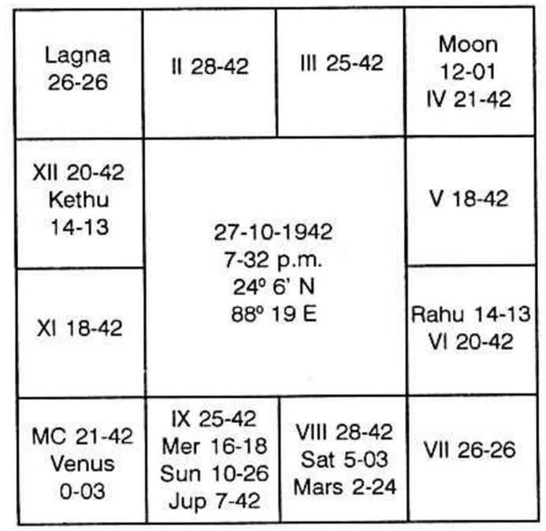

Can I do photography?
Horoscope is as follows:-

Rahu Dasa balance 10 years 9 months 10 days.
Mercury Dasa starts on 6-9-69.
Let us judge why he took photography. 10th cusp is in Venus star Jupiter sub. Venus, by nature, denotes photography.
Prosperity depends on the period which is to run. If we analyse, Mercury (11th cusp sub lord) and its results, then one can know how the gains would be. Mercury is posited in the 8th house. It is in Saturn star Jupiter sub. Saturn is lord of 11 and 12. It is in 7th house. It is exalted. Saturn shows that one will invest money (lord of 12 and no planet is in 12). Saturn as lord of 11 promises gains. It is in 7. So it threatens that you should not have any partner for any business. Because it is significator of 7 and also 12. Mars suggests independent venture. Saturn & Mars encourage your independent business and denote mixed results as Saturn owns the 11th and 12th houses. But in 11th Bhava Ketu is deposited. Venus alone is in Ketu stars. Hence Venus promises success and prosperity through the matters which Venus indicates. Photography is one of those which Venus indicates. Hence during Mercury Dasa, there will be speedy turnover, larger profits, satisfactory bank position, etc., and also during the sub periods of Saturn in July, August 1983 some worry especially through Tax Department. Otherwise, the whole of Mercury Dasa from 6-9-69 is beneficial. Customers increase. You will appoint more assistants. You will not be in difficulty to get materials. Costly ones will be purchased by you during Mercury Dasa Venus Bhukti Saturn Anthra in November 1974. Expansion and improvement from November is promised. Between 1969 and 1974 every year will show steady improvement.
According to Western System Sun just progresses in 10th house. It will be there for 25 years more when name, reputation, prestige, prosperity in profession, etc. are promised.
Moon by progression, now passes in 12th house, after 2 years Moon assures that Luck starts.
According to transit, from 7th March, 1969, financial position will be good - photography will be your profession.